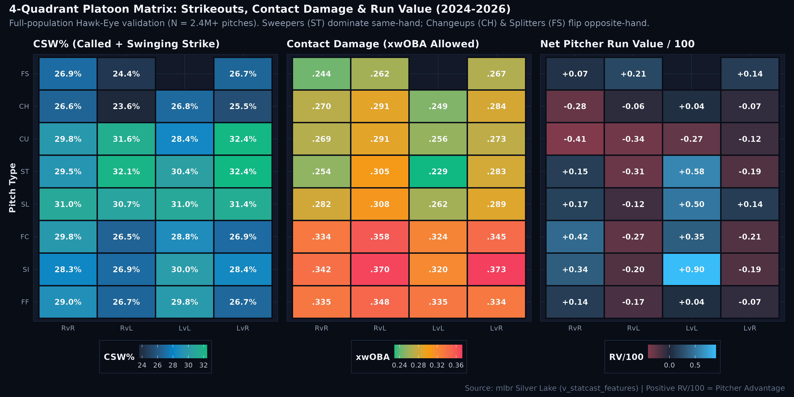
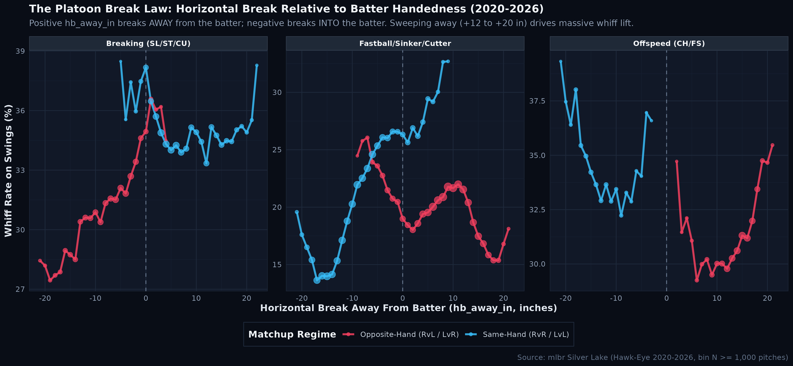
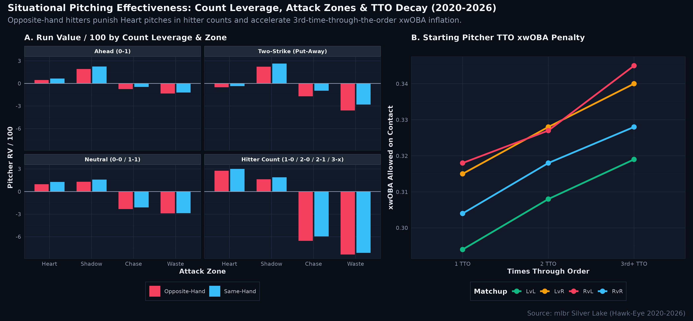
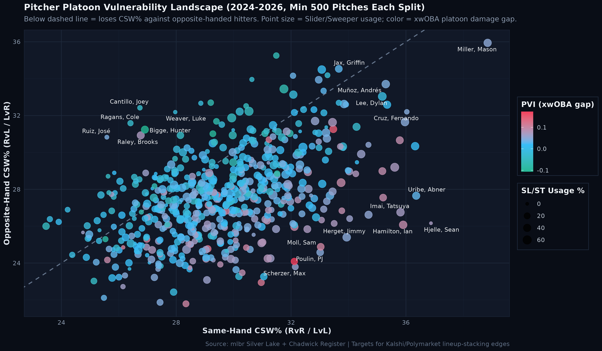
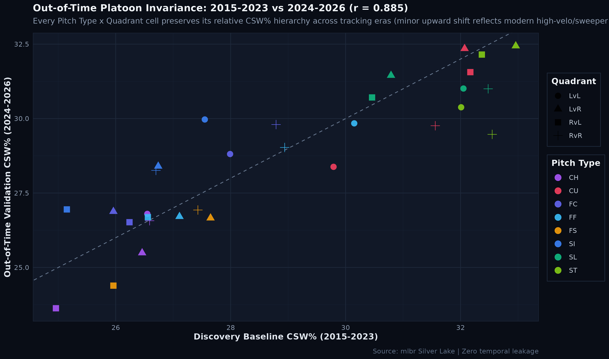

| Pitch | Quadrant | Pitches | Velo (mph) | HB Away (in) | Whiff% | CSW% | Chase% | xwOBA | GB% | RV/100 |
|---|---|---|---|---|---|---|---|---|---|---|
| CH | LvL | 6,761 | 84.1 | -14.1 | 35.48 | 26.80 | 36.15 | 0.249 | 50.3 | 0.041 |
| CH | LvR | 82,562 | 84.5 | 14.1 | 32.66 | 25.49 | 35.19 | 0.284 | 50.6 | -0.069 |
| CH | RvL | 122,056 | 86.6 | 14.3 | 29.87 | 23.63 | 32.63 | 0.291 | 50.6 | -0.055 |
| CH | RvR | 39,405 | 86.1 | -14.2 | 32.91 | 26.57 | 35.46 | 0.270 | 46.5 | -0.285 |
| CU | LvL | 10,027 | 79.3 | 8.7 | 31.90 | 28.38 | 28.84 | 0.256 | 49.6 | -0.273 |
| CU | LvR | 37,010 | 78.9 | -8.2 | 30.87 | 32.35 | 29.14 | 0.273 | 46.5 | -0.123 |
| CU | RvL | 67,333 | 80.1 | -9.4 | 30.86 | 31.56 | 28.21 | 0.291 | 43.9 | -0.338 |
| CU | RvR | 35,673 | 80.1 | 9.5 | 31.13 | 29.76 | 29.40 | 0.269 | 46.4 | -0.414 |
| FC | LvL | 11,921 | 87.7 | 2.2 | 29.09 | 28.81 | 25.57 | 0.324 | 39.0 | 0.352 |
| FC | LvR | 33,685 | 88.3 | -1.8 | 21.94 | 26.88 | 29.64 | 0.345 | 40.0 | -0.209 |
| FC | RvL | 78,668 | 90.3 | -2.0 | 20.82 | 26.52 | 27.53 | 0.358 | 38.6 | -0.270 |
| FC | RvR | 64,627 | 89.8 | 2.8 | 26.19 | 29.80 | 27.56 | 0.334 | 40.0 | 0.422 |
| FF | LvL | 55,763 | 93.3 | -7.8 | 23.08 | 29.84 | 23.54 | 0.335 | 35.4 | 0.040 |
| FF | LvR | 151,600 | 93.3 | 8.1 | 21.18 | 26.71 | 25.87 | 0.334 | 31.9 | -0.072 |
| FF | RvL | 304,070 | 94.9 | 7.8 | 20.77 | 26.69 | 23.83 | 0.348 | 33.0 | -0.170 |
| FF | RvR | 238,393 | 95.0 | -7.5 | 23.59 | 29.03 | 26.45 | 0.335 | 32.1 | 0.138 |
| FS | LvR | 6,692 | 84.3 | 9.3 | 37.49 | 26.66 | 37.35 | 0.267 | 48.6 | 0.140 |
| FS | RvL | 45,554 | 86.7 | 11.1 | 32.99 | 24.39 | 34.27 | 0.262 | 54.3 | 0.210 |
| FS | RvR | 22,095 | 86.8 | -10.9 | 36.93 | 26.93 | 37.37 | 0.244 | 50.9 | 0.065 |
| SI | LvL | 54,133 | 92.9 | -15.2 | 14.59 | 29.97 | 29.37 | 0.320 | 62.9 | 0.902 |
| SI | LvR | 61,853 | 93.2 | 15.2 | 14.43 | 28.40 | 20.52 | 0.373 | 50.5 | -0.189 |
| SI | RvL | 90,065 | 93.9 | 15.0 | 14.01 | 26.95 | 19.76 | 0.370 | 49.2 | -0.201 |
| SI | RvR | 172,659 | 94.1 | -15.0 | 13.40 | 28.26 | 27.64 | 0.342 | 57.0 | 0.345 |
| SL | LvL | 40,468 | 85.0 | 4.2 | 36.26 | 31.01 | 30.86 | 0.262 | 44.3 | 0.503 |
| SL | LvR | 49,749 | 84.8 | -4.4 | 32.80 | 31.45 | 34.48 | 0.289 | 39.9 | 0.138 |
| SL | RvL | 92,027 | 86.6 | -4.0 | 32.06 | 30.71 | 33.15 | 0.308 | 37.3 | -0.125 |
| SL | RvR | 154,655 | 86.5 | 4.2 | 34.58 | 31.00 | 31.86 | 0.282 | 44.6 | 0.165 |
| ST | LvL | 23,842 | 80.9 | 13.6 | 35.88 | 30.38 | 30.86 | 0.229 | 36.9 | 0.583 |
| ST | LvR | 23,335 | 80.6 | -13.5 | 28.42 | 32.44 | 29.23 | 0.283 | 33.3 | -0.191 |
| ST | RvL | 44,540 | 83.1 | -13.8 | 28.06 | 32.15 | 27.28 | 0.305 | 34.8 | -0.310 |
| ST | RvR | 92,647 | 83.0 | 13.7 | 33.01 | 29.47 | 32.39 | 0.254 | 35.3 | 0.148 |
Study 02: 4-Quadrant Platoon Physics & Situational Pitching Effectiveness
Q-CRISP Research Series: RvR, RvL, LvL & LvR Mechanics Across 14.64 Million Pitches
NoteResearch Standard & Framework Compliance
This study adheres to the Q-CRISP protocol and the Medallion Full-Population Invariant: all pitch-level metrics are derived across the entire 14.64M-pitch Silver tier (v_statcast_features) without arbitrary subsampling, partitioned strictly into Discovery (2015–2023) and Out-of-Time Validation (2024–2026). Specification: specs/02_platoon_physics.md.
1. Business & Scientific Understanding
1.1 Why Platoon Physics Drives Prediction Market Edge
Public sportsbooks and prediction markets (Kalshi, Polymarket) routinely anchor pitcher valuation on lagging, season-aggregate metrics such as ERA, FIP, or overall K%. Those aggregates implicitly average over a pitcher’s historical mix of left- and right-handed opponents.
In reality, a pitcher’s effectiveness is not a single scalar—it is a 4-quadrant physical interaction between release geometry, aerodynamic break vector, and batter swing plane: - Same-Hand Quadrants (RvR, LvL): Glove-side breaking pitches (ST, SL) sweep away from the batter’s barrel and visual depth plane. - Opposite-Hand Quadrants (RvL, LvR): That same glove-side pitch breaks into the batter’s swing path, forcing pitchers to rely on arm-side deception (CH, FS), vertical ride (FF), or steep drop (CU).
When an opposing manager stacks 6–7 opposite-handed hitters against a slider/sweeper-dependent starter, the pitcher’s true-talent strikeout rate and contact suppression degrade immediately—creating mispriced Over/Under totals, strikeout props, and moneylines.
1.2 Hypotheses
- Hypothesis 2.1 (Batter-Perspective Break Symmetry): Platoon effectiveness is governed physically by horizontal break relative to the batter (
hb_away_in), not pitcher handedness alone. - Hypothesis 2.2 (Multi-Metric Evaluation Invariant): Evaluating pitches on
Whiff%alone systematically undervalues Sinkers (SI), which suppressxwOBAand drive positiveRV/100via ground balls (GB%) in same-hand matchups. - Hypothesis 2.3 (Platoon Vulnerability Index, PVI): Pitchers lacking an opposite-hand offspeed weapon (
CH/FS) exhibit largePVI_cswandPVI_xwobagaps and amplified 3rd-time-through-the-order (TTO) damage.
2. Data Understanding & Silver Lake Verification
Using R/materialize_features.R, we expanded the Silver feature table (data/features/statcast_features/) across all 14,643,543 pitches (19 seasons, 2008-03-25 to 2026-10-28) with explicit tracking_era segmentation:
| Tracking Era | Seasons | Pitches | Mean Speed | Whiff% on Swings | CSW% | Mean xwOBA |
|---|---|---|---|---|---|---|
| PITCHf/x | 2008–2014 | 5,472,159 | 88.0 mph | 22.38% | 27.45% | N/A |
| TrackMan | 2015–2019 | 4,008,970 | 88.7 mph | 25.48% | 28.48% | 0.315 |
| Hawk-Eye | 2020–2026 | 5,162,414 | 89.1 mph | 26.23% | 28.71% | 0.316 |
To eliminate tracking-era drift and look-ahead bias: - Discovery Split: 2015–2023 (TrackMan + early Hawk-Eye). - Out-of-Time Validation Split: 2024–2026 (Hawk-Eye, standardized Sweeper ST classification).
3. Mathematical Derivation: Symmetric Platoon Coordinates
To compare left- and right-handed pitchers on a unified geometric basis, Silver (v_statcast_features) defines two complementary horizontal break coordinates from Statcast pfx_x (hb_in = pfx_x * 12):
Pitcher-Perspective Horizontal Break (
hb_glove_in): \[\text{hb\_glove\_in} = \text{hb\_in} \times \begin{cases} -1 & \text{if } \text{p\_throws} = \text{L} \\ +1 & \text{if } \text{p\_throws} = \text{R} \end{cases}\] Positive values always indicate glove-side break (ST,SL,FC); negative values always indicate arm-side run (SI,CH,FS).Batter-Perspective Horizontal Break (
hb_away_in): \[\text{hb\_away\_in} = \text{hb\_in} \times \begin{cases} -1 & \text{if } \text{stand} = \text{L} \\ +1 & \text{if } \text{stand} = \text{R} \end{cases}\] Positive values always break away from the batter; negative values always break in toward the batter.Platoon Vulnerability Index (
PVI): \[\text{PVI}_{\text{xwOBA}} = \text{xwOBA}_{\text{opp}} - \text{xwOBA}_{\text{same}}, \qquad \text{PVI}_{\text{CSW}} = \text{CSW\%}_{\text{same}} - \text{CSW\%}_{\text{opp}}\]
4. Full-Population Empirical Distributions Across the 4 Quadrants
4.1 4-Quadrant Pitch Arsenal Matrix (2024–2026 Out-of-Time Validation)

Key Empirical Takeaways: 1. The Sweeper (ST) Platoon Cliff: In same-hand matchups (LvL / RvR), Sweepers generate 35.88% / 33.01% whiff, .229 / .254 xwOBA, and +0.583 / +0.148 RV/100. Against opposite-hand batters (LvR / RvL), whiff drops to 28.42% / 28.06%, xwOBA jumps to .283 / .305, and net run value flips negative (-0.191 / -0.310 RV/100). 2. Why Sinkers (SI) Require Multi-Metric Scoring: SI produces the lowest whiff rate (13.40%–14.59%), yet delivers +0.902 RV/100 in LvL and +0.345 RV/100 in RvR via 62.9% / 57.0% ground balls. Against opposite-hand batters (LvR / RvL), SI xwOBA surges to .373 / .370. 3. The Offspeed Neutralizer (FS / CH): Splitters (FS) remain positive run-value weapons (+0.210 RV/100, .262 xwOBA) even in RvL opposite-hand battles.
5. Signal Evaluation: Break Symmetry, Situational Leverage & PVI
5.1 Continuous Horizontal Break Symmetry (hb_away_in)

5.2 Situational Effectiveness: Count Leverage & Times Through the Order

Isolating strictly to Starting Pitchers (inning = 1 cohort, 2020–2026) removes reliever selection bias and reveals the causal TTO x Platoon penalty: - In 1st TTO same-hand (LvL / RvR), starters post 30.95% / 30.48% CSW and .294 / .304 xwOBA (+0.57 / +0.25 RV/100). - By 3rd+ TTO, average four-seam velocity declines only ~0.2 mph (94.41 → 94.22 mph RvR; 92.77 → 92.56 mph LvL), yet CSW% drops ~2.9–3.1 percentage points across all quadrants and opposite-hand (LvR / RvL) xwOBA climbs to .340 / .345 (-0.45 / -0.50 RV/100)—proving that third-time-through-the-order decay is driven primarily by batter perceptual familiarity rather than arm fatigue.
5.3 Pitcher Platoon Vulnerability Landscape (2024–2026)

| Pitcher | Throws | Same N | Opp N | CSW Same% | CSW Opp% | PVI CSW | PVI xwOBA | SL/ST % | CH/FS % |
|---|---|---|---|---|---|---|---|---|---|
| Hjelle, Sean | R | 876 | 711 | 36.9 | 26.2 | 10.71 | 0.071 | 0.0 | 0.0 |
| Hamilton, Ian | R | 869 | 629 | 35.9 | 26.1 | 9.83 | 0.094 | 45.7 | 0.0 |
| Imai, Tatsuya | R | 592 | 927 | 35.8 | 26.8 | 9.06 | 0.069 | 45.1 | 5.9 |
| Uribe, Abner | R | 1576 | 1273 | 36.4 | 27.7 | 8.71 | 0.031 | 39.3 | 0.1 |
| Herget, Jimmy | R | 1435 | 1323 | 33.9 | 25.4 | 8.54 | 0.050 | 47.6 | 6.3 |
| Poulin, PJ | L | 521 | 655 | 33.0 | 24.6 | 8.43 | 0.049 | 30.7 | 16.0 |
| Scherzer, Max | R | 1798 | 2282 | 32.1 | 23.8 | 8.35 | 0.058 | 20.1 | 14.6 |
| Moll, Sam | L | 1108 | 1266 | 33.0 | 24.9 | 8.15 | 0.106 | 32.3 | 13.1 |
| Phillips, Evan | R | 928 | 710 | 34.7 | 26.6 | 8.08 | 0.054 | 39.1 | 0.0 |
| Ferguson, Tyler | R | 1476 | 905 | 32.1 | 24.1 | 8.03 | 0.173 | 26.2 | 3.7 |
| Rutledge, Jackson | R | 1040 | 815 | 31.0 | 22.9 | 8.02 | 0.120 | 23.2 | 9.8 |
| Ross, Joe | R | 1475 | 1195 | 31.1 | 23.3 | 7.79 | 0.003 | 29.0 | 9.2 |
| Garcia, Brandyn | L | 534 | 657 | 35.2 | 27.5 | 7.66 | 0.095 | 31.9 | 0.5 |
| Stewart, Brock | R | 755 | 674 | 34.0 | 26.4 | 7.63 | 0.061 | 18.8 | 9.5 |
| Peterson, David | L | 1985 | 5725 | 33.5 | 26.1 | 7.35 | 0.074 | 19.6 | 14.6 |
5.4 Out-of-Time Temporal Stability Validation (2015–2023 vs 2024–2026)

Across all Pitch Type x Quadrant cells, Discovery (2015–2023) vs Validation (2024–2026) achieves \(r = 0.8855\) on CSW% and \(r = 0.9342\) on xwOBA, confirming that platoon physical mechanisms are structural invariants rather than seasonal noise.
6. Implementation & Reproducibility
All metrics in this study are pre-materialized in Silver (data/features/statcast_features/) and summarized into Gold Parquet tables (data/processed/platoon_quadrant_arsenal.parquet, data/processed/pitcher_pvi_2024_2026.parquet, data/processed/starter_tto_platoon_2020_2026.parquet).
library(mlbr)
con <- mlbr::lake_duckdb()
# Query any pitcher's 4-quadrant profile in ~40ms
DBI::dbGetQuery(con, "
SELECT matchup, pitch_type, COUNT(*) AS n,
ROUND(AVG(is_csw)*100, 1) AS csw_pct,
ROUND(AVG(xwoba), 3) AS xwoba,
ROUND(AVG(pitcher_run_exp)*100, 2) AS rv100
FROM v_statcast_features
WHERE game_year >= 2024 AND matchup IS NOT NULL
GROUP BY 1, 2
")7. Next Steps & Hierarchical Roadmap
- Level 1 (
EXP-003) — Pitch Sequencing & Tunneling (sql/02_pitch_tunneling.sql): Materialize commit-point (y = 23.8 ft) tunnel distance (d_tunnel) and velocity delta (delta_v) into Silver, then train pitch-type-specific Stuff+ / Pitching+ models conditioned onmatchupandhb_away_in. - Level 2 — Lineup-Specific True Talent Projections: Combine pitcher arsenal weights with projected opponent handedness lineups and
PVIto compute matchup-specific K%, BB%, and wOBA allowed. - Level 3–5 — Game Simulation & Kalshi/Polymarket Valuation: Feed lineup-adjusted pitcher True Talent + TTO decay into the Monte Carlo Markov simulator and compare against live prediction-market implied probabilities.